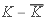
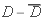

Introduction
With the discovery of the Higgs boson HiggsDiscoveryATLASHiggsDiscoveryCMS is established that the Higgs mechanism explain the electroweak symmetry breaking and it generate the mass of all particles of the Standard Model (SM), omitting the neutrino masses. The SM is the most successful theory that explain many experimental results. However, is well known that, despite its great success, the SM cannot help us to understand several issues such as the hierarchy problem, dark matter, the flavor problem etc. This encourages the study of SM extensions ArkaniHamed:2002qy,ArkaniHamed:2001nc,FRAMPTON1987157,GEORGI1985463,Harari:1979gi,Harari:1981uh,book:1299422,10.1143/PTP.36.1266,PhysRevD.10.275,Mohapatra:1974hk,POLYAKOV1977429,Randall:1999ee,PhysRevD.20.2619,PhysRevD.19.1277 with the goal of solve some issue unexplained. The price to pay is the emergence of free parameters which are not predicted by the theory. From a phenomenological point of view, one frequently encounters these free parameters which should be constrainted in some way, but at same time, motivated and allowed by experimental measurements. With the package, is possible to do it. Free model parameter spaces can be to scanned of a semi‐automatic and intuitive way within a friendly work environment. generate graphics and tables which show the allowed regions for the free model parameters of BSM theories. Similar packages to can be consulted in the Refs. EasyScanHEPGAMBITCheckMATE The physical observables considered in  are the following:
are the following:
Higgs boson data
Higgs boson coupling modifiers 
Signal strength modifiers
Meson physics  mesons
mesons
mesons  mixing
mixing
 mixing
 mixing
Flavor‐violanting processes
Oblique parameters
Unitariety
However, in this version only (1 ) is enabled. In addition, v1.0 is able to evaluate branching ratios of the SM‐like Higgs boson,  ‐odd and
‐odd and  ‐even scalars.
‐even scalars.